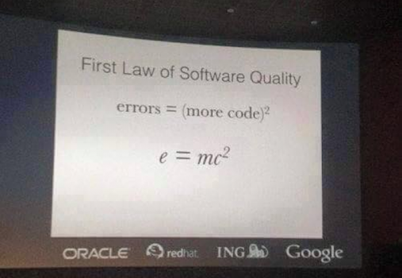

Happy dev with {purrr}
A transcription of my talk at the Rencontres R 2018.
7th Rencontres R
From the 4th to 6th of July, I was with ThinkR at the 7th edition of the Rencontres R, the annual French meeting about R.
During this conference, I gave a lightning called “Vous allez aimer avoir {purrr}”, which is a french dad-joke about the fact that {purrr} sounds exactly like “peur”, which is the french word for “fear”.
That being said, here’s a transcription of what this lightning talk was about, for those who didn’t get the chance to be there.
Vous allez aimer avoir {purrr}
Here’s a list of some reasons why {purrr} is an amazing tool for writting cleaner and simpler code: that is to say a code which will be, on the long run, easier to maintain.
{purrr} ?
{purrr} is a package from the core tidyverse, defined as a “Functional Programming Tools”. It’s a relatively recent package, as the 0.0.0.9000 was released on GitHub on the 29th of november 2014.
It can be used to work on lists. And, as you can remember, almost every object you’ll work with is a list: vectors, dataframe, and of course, list.

Iterate
If you’re used to standard iteration, this is the functions you’re using. Grammar and params order is a little bit messy, which can be a nightmare if you want to move from one to the other.
apply(X, MARGIN, FUN, ...)
lapply(X, FUN, ...)
sapply(X, FUN, ..., simplify = TRUE, USE.NAMES = TRUE)
vapply(X, FUN, FUN.VALUE, ..., USE.NAMES = TRUE)
tapply(X, INDEX, FUN = NULL, ..., default = NA, simplify = TRUE)
mapply(FUN, ..., MoreArgs = NULL, SIMPLIFY = TRUE, USE.NAMES = TRUE)
eapply(env, FUN, ..., all.names = FALSE, USE.NAMES = TRUE)
In {purrr}, you’re using function which have a stable and consistent grammar: once you’ve learnt one, you can easily switch to another.
map(.x, .f, ...)
map_if(.x, .p, .f, ...)
map_at(.x, .at, .f, ...)
map_lgl(.x, .f, ...)
map_chr(.x, .f, ...)
map_int(.x, .f, ...)
map_dbl(.x, .f, ...)
map_dfr(.x, .f, ..., .id = NULL)
map_dfc(.x, .f, ...)
Extract
Extracting elements from a list in base can be done that way:
lapply(list, function(x) x$tweets)
lapply(list, function(x) x[2])
lapply(list, function(x) nchar(x))
do.call( rbind,lapply(list, function(x) x$df) )
It’s less verbose and more consistent if you’re doing it with {purrr}:
map(list, "tweets")
map(list, 2)
map(list, nchar)
map_dfr(list, "df")
Lambda functions
Lambda functions are functions which are created on the fly, they are also called anonymous functions because you don’t have to give them a name.
lapply(list, function(x) x + 2)
{purrr} mappers are an easy to use shortcut to do this exact same thing.
map(list, ~ .x + 2)
They also work for more than one element:
mapply(function(x, y) x + y, list1, list2)
VS
map2(list1, list2, ~ .x + .y)
Note also the consistency of grammar between the two, unlike lapply
and mapply
Type stable
{purrr} functions are type stable, which means they will always return the type you are expecting:
sapply(iris$Sepal.Length, as.data.frame) %>% class()
## [1] "list"
sapply(iris$Sepal.Length, as.numeric) %>% class()
## [1] "numeric"
VS
map_dfr(iris$Sepal.Length, as.data.frame) %>% class()
## [1] "data.frame"
map_dbl(iris$Sepal.Length, as.numeric) %>% class()
## [1] "numeric"
Note: yes, this iteration makes no sense, it’s just an example ;)
Selected actions
Doing a specific action somewhere (by name or by condition) is rather verbose in base
sapply(iris[, sapply(iris, is.numeric)], mean)
while {purrr} has a _if and _at notation (that you already know from {dplyr}), which make it clear what you are doing.
map_if(iris, is.numeric, mean)
sapply(iris[, c("Sepal.Length", "Sepal.Width")], mean)
VS
map_at(iris, c("Sepal.Length", "Sepal.Width"), mean)
Note: the {purrr} version also returns the elements you are not modifing, contrary to the base version, so these codes do not do the exact same thing.
e = mc2
Let’s end with the e = mc2 law of software quality: the more code
you have, the more you are prone to make mistakes.

Note: I’ve found this slide on the internet, if anybody could point me out to the source, I’d be glad to include it.
Cleaner code
Compare :
coef(summary(lm(Sepal.Length ~ Species, data = iris)))
coef(summary(lm(Pepal.Length ~ Species, data = iris)))
coef(summary(lm(Sepal.Width ~ Species, data = irirs)))
coef(summary(lm(Sepal.Length ~ Species, data = iris)))
to
coef_lm <- compose(coef, summary, lm)
coef_lm(Sepal.Length ~ Species, data = iris)
coef_lm(Petal.Length ~ Species, data = iris)
coef_lm(Sepal.Width ~ Species, data = iris)
coef_lm(Petal.Width ~ Species, data = iris)
The first portion is definitely more verbose, and a lot of code is
unnecessarily repeated. There is so much repetitions that you didn’t
notice the typos. When you are repeating the same series of functions,
compose allows you to build a new function that will do exactly this
series, but with a less verbose code.
Less code, more rock
Here is another case.
Compare:
sapply(airquality, mean, trim = 2, na.rm = TRUE)
sapply(mtcars, mean, trim = 2, na.rm = TRUE)
sapply(volcano, mean, trim = 2, na.rm = TRUE)
to
my_mean <- partial(mean, trim = 2, na.rm = TRUE)
map_dbl(airquality, my_mean)
map_dbl(mtcars, my_mean)
map_dbl(volcano, my_mean)
Here, in the first chunk, if I need to change the trim or the na.rm
argument, I’ll have to do this three times. Which seems easy, but let’s
imagine you have the three somewhere inside a 2000 lines scripts, of if
you have to change this 20 times. Finding a needle in a haystack, yes.
partial is a function that allows you to prefill a function, so that
when you need to change a param, you’ll have to change it only once,
instead of multiple times.
I Am Groot
If you are a little bit in a rush and want to apply a function without
bothering about errors, possibly is your new best friend:
# Will fail
sapply(iris, max)
# Will work
sapply(airquality, max)
# Will fail
sapply(volcano, max)
# Will fail
sapply(iris, max)
VS
possible_max <- possibly(max, otherwise = NULL)
# Will all work
map(iris, possible_max)
map(airquality, possible_max)
map(volcano, possible_max)
map(iris, possible_max)
What possibly does is taking a function, an otherwise param, and
when this newly function is used, either the result or the otherwise
element is returned.
One use case can be webscraping, when you want to scrape hundreds of url, but don’t want your iteration to stop because one out of x urls fails.
Predicates
Finally, let’s look at keep and discard, two predicates that allow
to do conditional selection or removal in a list.
Yes, keep and discard do exactly what you expect them to do, which
make using them a little bit clearer than using a base solution:
iris[ , sapply(iris, is.numeric) ]
VS
keep(iris, is.numeric)
iris[, ! sapply(iris, is.numeric) ]
VS
discard(iris, is.numeric)
Pipeline
Here’s a pipeline example of using {purrr} for getting the rounded mean of each column of two data.frames. As you can see, if I want to change something, I’ll only have to do it once!
rounded_mean <- compose(
partial(round, digits = 1),
partial(mean, trim = 2, na.rm = TRUE)
)
map(
list(airquality, mtcars),
~ map_dbl(.x, rounded_mean)
)
## [[1]]
## Ozone Solar.R Wind Temp Month Day
## 31.5 205.0 9.7 79.0 7.0 16.0
##
## [[2]]
## mpg cyl disp hp drat wt qsec vs am gear carb
## 19.2 6.0 196.3 123.0 3.7 3.3 17.7 0.0 0.0 4.0 2.0
Slides
The slides from the talk are available here:
https://github.com/ColinFay/conf/blob/master/2018-07-rencontresr-rennes/purrr-lightning.pdf